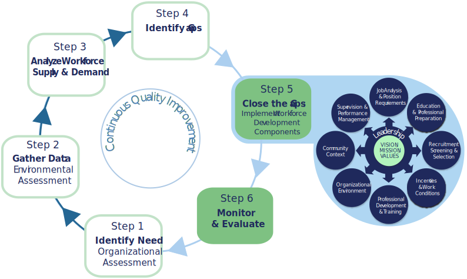

Overview
Closing the Gap.
You've completed the Planning Process. You've identified the gaps between your current workforce and the workforce your agency will need in the future.
You've also completed Exploring Components & Strategies.
Now, you're ready to put it all together to start closing the gaps!
Putting It All Together
Here's what you need to do:
- Prioritize the components most relevant to your agency.
- Develop an Action Plan.
- Plan how you'll Monitor & Evaluate the Impact of your Action Plan.
- Review A Final Word as you get ready to launch your initiatives.
STOP Always download, save, and work in your saved worksheets!
Prioritize
During this step, you'll prioritize the Workforce Development Components.
You'll make decisions based on:
- All the information you’ve already gathered and considered in earlier sections.
- Your completed summary and assessments.
- Your responses to the questions posed in the worksheet for this section.

Worksheet: Prioritize Components
STOP Download, save, and work in your saved worksheet!
Action Plan
Another part of closing the gaps is addressing your agency Action Plan.
Develop your Action Plan after careful consideration of all the information you’ve collected.
Don't worry about addressing every workforce development component right away. Instead, let your plan develop incrementally.
Base your Action Plan on factors like:
- Your agency’s overall capacity for implementing changes.
- The commitment of your agency's leadership.
- Cost, including staff time and effort.
- Resource allocation.
Focusing on what can be accomplished in 3, 6, and 12 months will help your agency track progress and identify any unanticipated barriers. These progress markers help maintain investment and focus on your Action Plan.
Worksheet: Develop Your Action Plan
STOP Download, save, and work in your saved worksheet!
Monitor & Evaluate
As you develop your Action Plan, think about how to measure its impact.
Your team should continually monitor its progress using agreed-upon metrics and reliable information.
You may need to adjust the plan in order to adapt to changing conditions in the environment or in response to unanticipated barriers.
Use the worksheet to guide the development of your evaluation plan.
Worksheet: Monitor & Evaluate Your Action Plan
STOP Download, save, and work in your saved worksheet!